- 版本控制工具的发展：
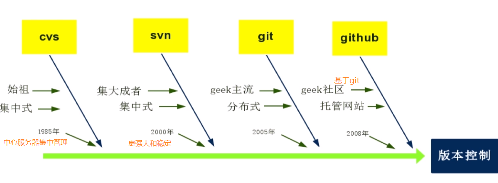
git 是分布式版本控制系统，能记录所有文件的所有版本，并有效地追踪文件的变化，也容易回滚到文件之前的状态。
1.安装与配置
①下载 git
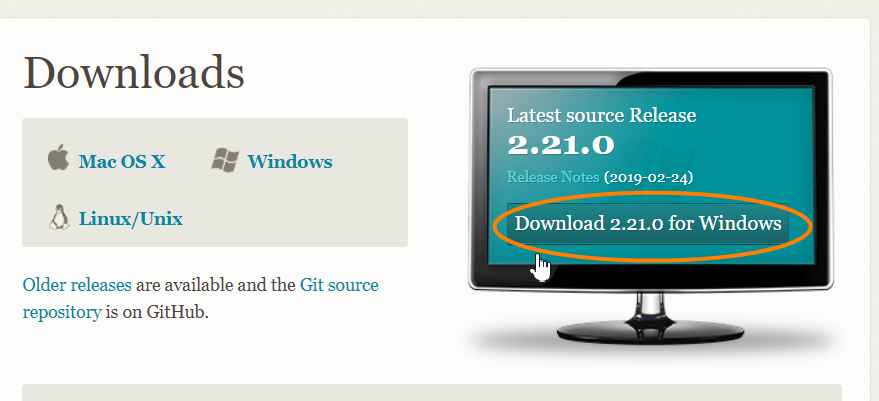
- 然后按默认选项安装即可
②验证安装
- 打开命令行 输入 git
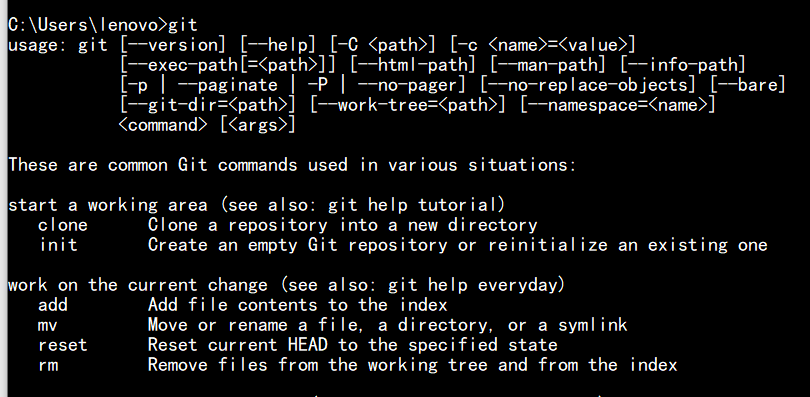
- 如果出现上图内容 说明安装成功
③配置用户信息
安装好 git 后，需要配置用户信息(绑定 GitHub 用户名 和邮箱)。
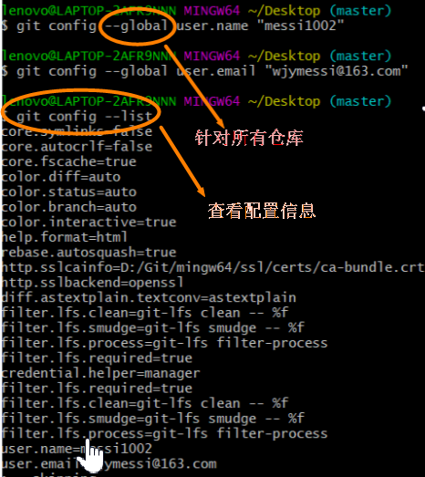
2.Git 仓库
- 仓库又名版本库，英文名是 repository，可以将之理解为一个目录，目录中的所有文件都可被 git 管理。每个文件的修改、删除等操作都可以被 git 追踪。
- git 仓库的相关操作：
1 | pwd: 查看目前位置。 |
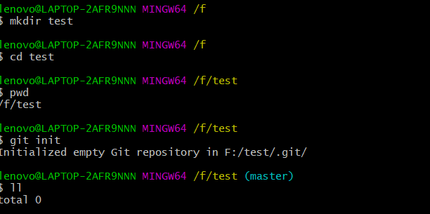
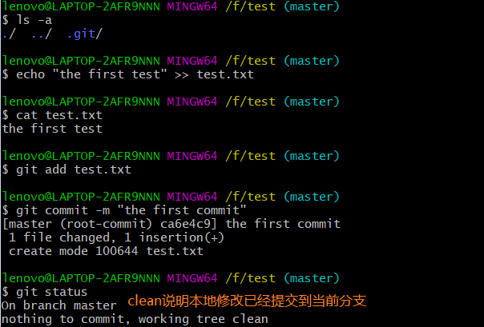
3.Git 工作流
原理分析：当工作区使用 git add 命令将修改后的文件提交到暂存区时，暂存区中的文件将会被提交到 object 文件目录中，index 的指针也会指向 object 文件目录中的新文件 id。执行 git commit 命令后，master 分支更新，其中的指针也会指向 object 文件目录中的新文件 id。
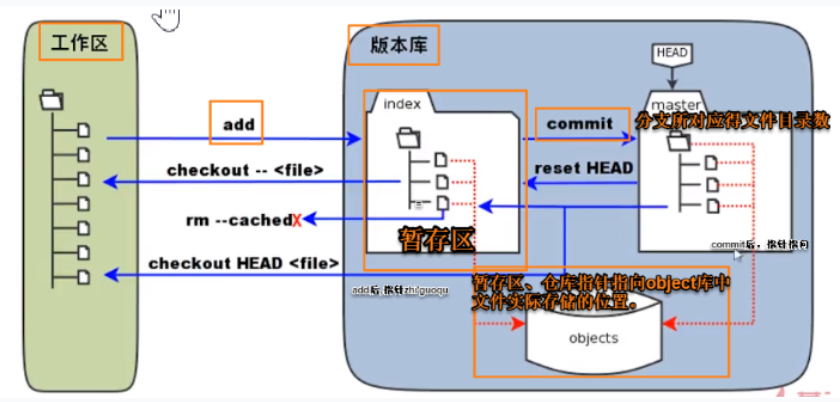
①暂存区到工作区的回滚
- 一般开发完成但还没有测试的文件都会被提交到暂存区
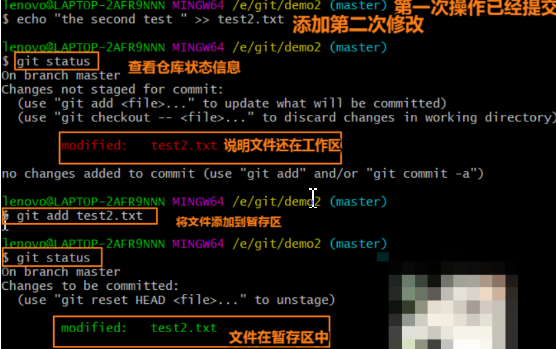
- 如果不想要暂存区的最新版本 可以直接丢弃
| git reset HEAD 文件名(将暂存区的内容还原为最后一次提交的内容)
| git checkout – 文件名(将工作区的内容还原为最后一次提交的内容)
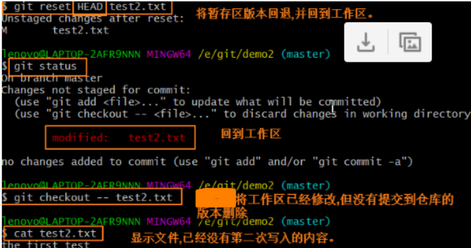
②已提交版本的回滚
- 要找到以前的提交版本 需要回滚
- 我们先创建一次提交：
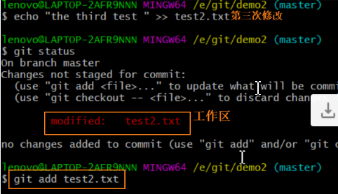
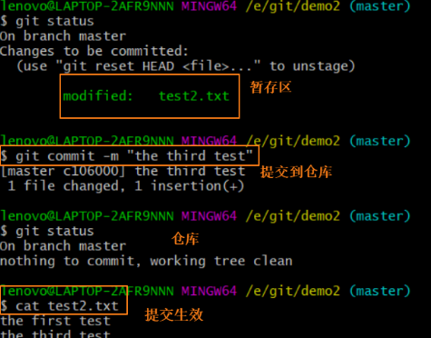
- 现在查看 commit 号：git log
- 此时代码需要回到过去 即将 hard 指针(当前环境的版本指针)修改到某次 commit 上：git reset –hard commit号
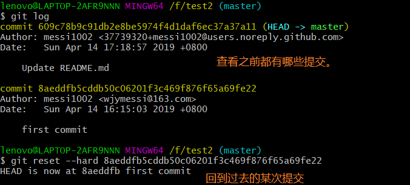
- 回到过去后 使用 git reflog 可以查看”未来”的版本号
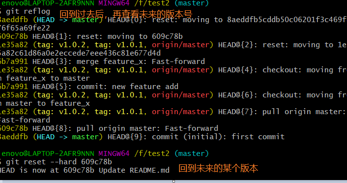
③清空仓库
- 清空本地仓库：
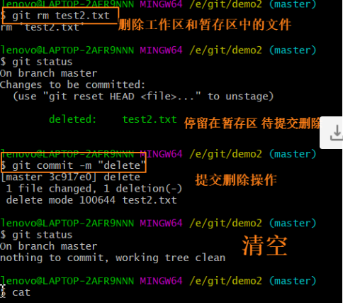
- git rm –cache 文件名：删除添加到暂存区的文件
- git rm 文件名：同时删除工作区和暂存区的文件
注意：以上所有操作只是提交给本地仓库，并不是 Github。
4.远程仓库
- 本地仓库：在电脑上的仓库
- 远程仓库：在公网服务器上的仓库
通过 git push 提交修改到远程仓库时，需要 ssh 连接(连接后每次提交都不需要重新输入密码)。
ssh 连接的具体步骤：
https://blog.csdn.net/qq_41979043/article/details/83046278 —— 3.安装git
- 关联远程仓库：
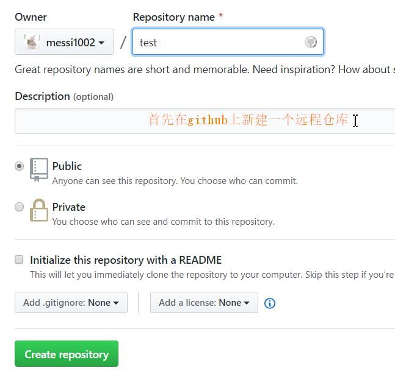
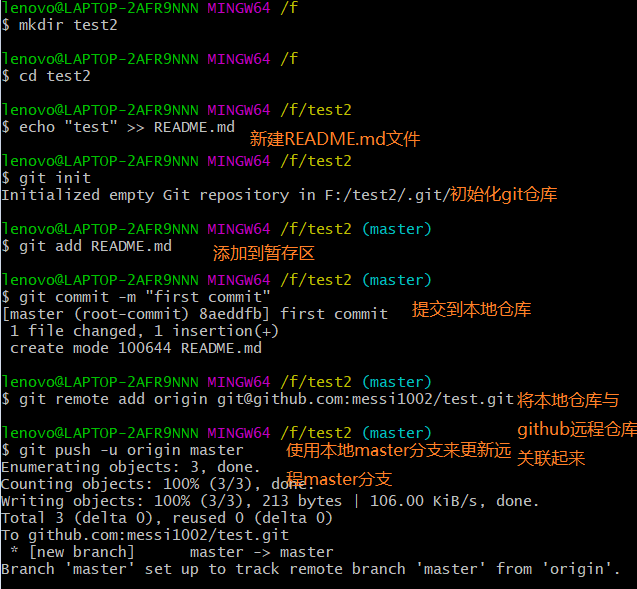
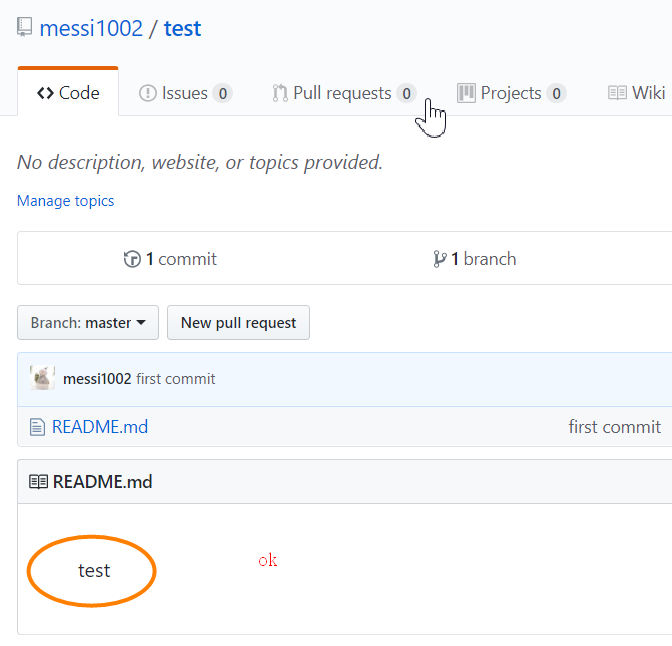
- 每次可以使用 git push 命令 将本地仓库的 master 分支同步到远程仓库的 master 分支
5.克隆仓库
- 将远程仓库克隆到本地：
- 1.Clone with SSH：git clone git@github.com:messi1002/test.git
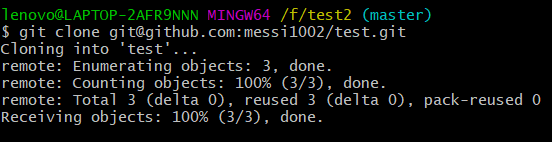
- 2.Clone with HTTPS：git clone https://github.com/messi1002/test.git
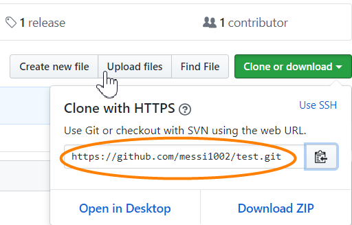
- 将远程仓库的文件更新到本地仓库：git pull origin master
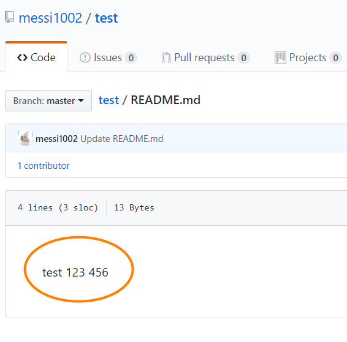
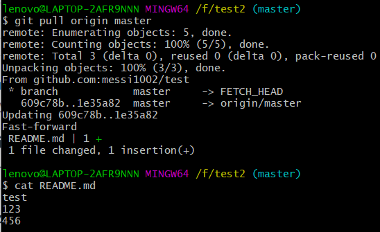
6.标签管理
当需要发布新的版本时，需要在版本库中打一个标签(确定该标签对应的版本时刻)。
以后想要回滚到某个版本时，可以直接通过标签(版本号)回滚。
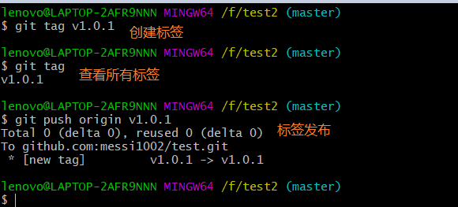
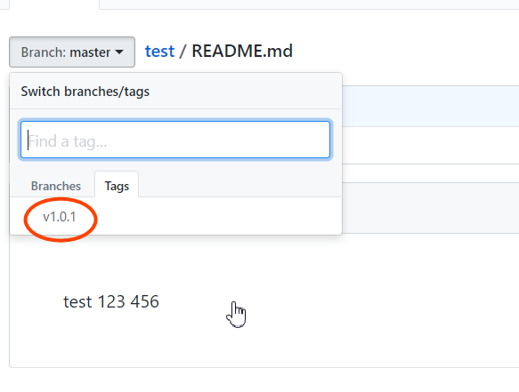
- 新建标签并指定提交信息：git tag -a name -m “comment”
- 删除标签：git tag -d name
7.分支管理
当我们需要修改正在更新的项目的 bug 时，可以新建一个分支，以已经发布的项目代码为基础，修改 bug 后重新发布代码，最后再将此分支合并到正在开发的分支上。
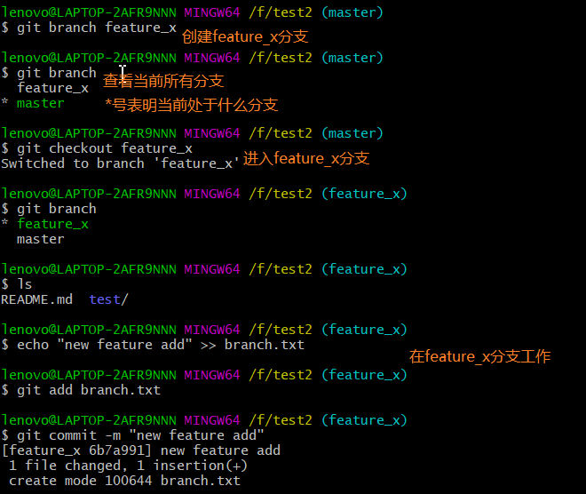
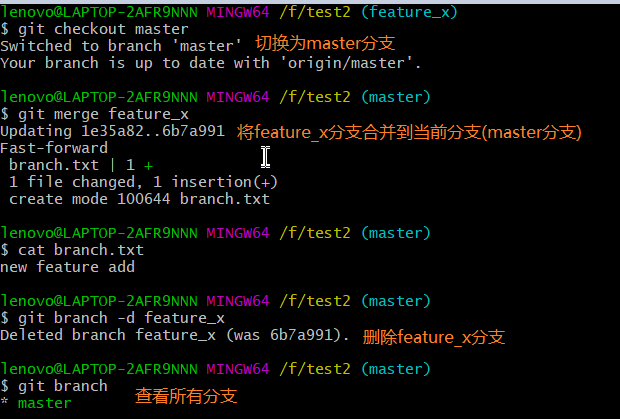
附录
- 我的个人博客：messi1002.top
- 如有错误或疑惑之处 请联系 wjymessi@163.com